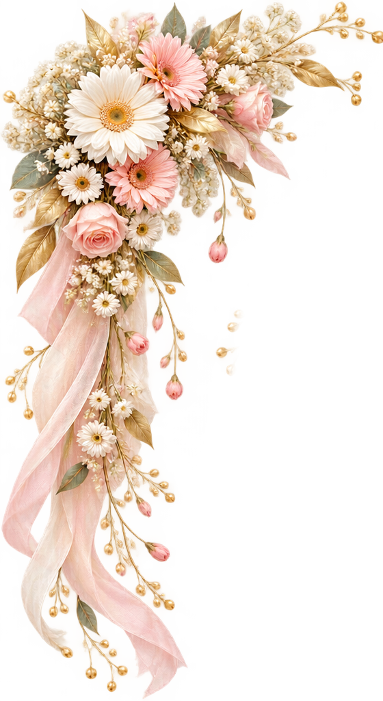
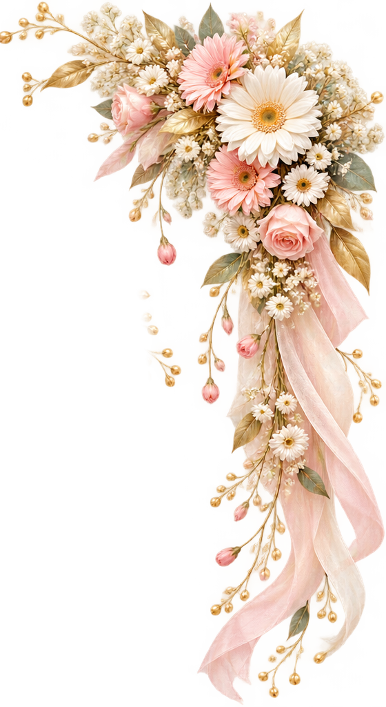
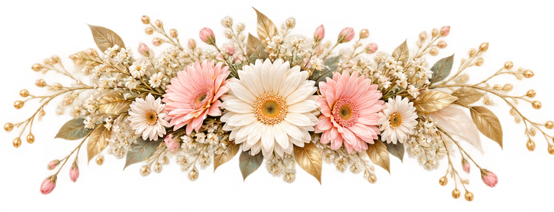

Beautiful-Flowers.de
Floristik mit Liebe zum DetailVon Hand gefertigt
Mit Liebe zum Detail. Von Hand gefertigt. Einzigartig.
Jedes Blumenarrangement erzählt seine eigene Geschichte. Bei Beautiful-Flowers.de entstehen mit viel Liebe, Kreativität und handwerklichem Geschick individuelle florale Einzelstücke – keine Massenware, sondern echte Unikate.
Ob Brautstrauß, Brauttasche, Hochzeitsdekoration oder liebevoll gestalteter Grabschmuck: Jedes Werkstück wird sorgfältig von Hand gefertigt und nach persönlichen Wünschen gestaltet.
Auf dieser Website zeigen wir Arrangements aus hochwertigen Kunstblumen, die ihre Schönheit dauerhaft bewahren. Auf Wunsch können vergleichbare Arrangements auch mit frischen Blumen angefertigt werden.
So einzigartig wie die Menschen und besonderen Momente, für die sie geschaffen werden.
Florale Arbeiten für besondere Momente
Unsere Floristikbereiche
Persönlich & individuell
Ihre Wünsche. Unsere Kreativität.
Jeder Anlass ist besonders – und genauso individuell sollte die passende Floristik sein.
In einem persönlichen Beratungsgespräch nehmen wir uns Zeit für Ihre Vorstellungen, Wünsche und Ideen. Gemeinsam gestalten wir einzigartige Blumenarrangements, die perfekt zu Ihnen und Ihrem Anlass passen.
Ob Farben, Formen, Materialien oder besondere Details – jedes Werkstück wird mit Liebe zum Detail von Hand gefertigt.
Da jede Anfertigung individuell gestaltet wird, erstellen wir Ihnen gerne ein persönliches, unverbindliches Angebot.
Individuelle Beratung anfragenEinblicke in unsere Arbeiten
Vorhandene Produkte
Mit Liebe zum Detail
Ihre Wünsche – unsere Floristik
Jede Blume erzählt ihre eigene Geschichte – und jede unserer floralen Kreationen wird mit viel Liebe zum Detail gestaltet.
Unsere gezeigten Arrangements werden aus hochwertigen Kunstblumen und sorgfältig ausgewählten Floristikmaterialien aus dem Fachhandel gefertigt.
Auf Wunsch können viele unserer Kreationen auch mit frischen Blumen gestaltet werden. Dabei berücksichtigen wir selbstverständlich die saisonale Verfügbarkeit der gewünschten Blumen und die individuellen Gestaltungsmöglichkeiten.
Ob romantischer Brautstrauß, stilvolle Hochzeitsdekoration oder liebevoll gestalteter Grabschmuck – Farben, Blüten und Arrangements können ganz nach Ihren persönlichen Vorstellungen abgestimmt werden.
So entsteht ein individuelles florales Werk, das zu Ihrem besonderen Anlass passt.
Jedes Arrangement ist so individuell wie Ihre Wünsche – deshalb erstellen wir Ihnen gerne ein persönliches Angebot.